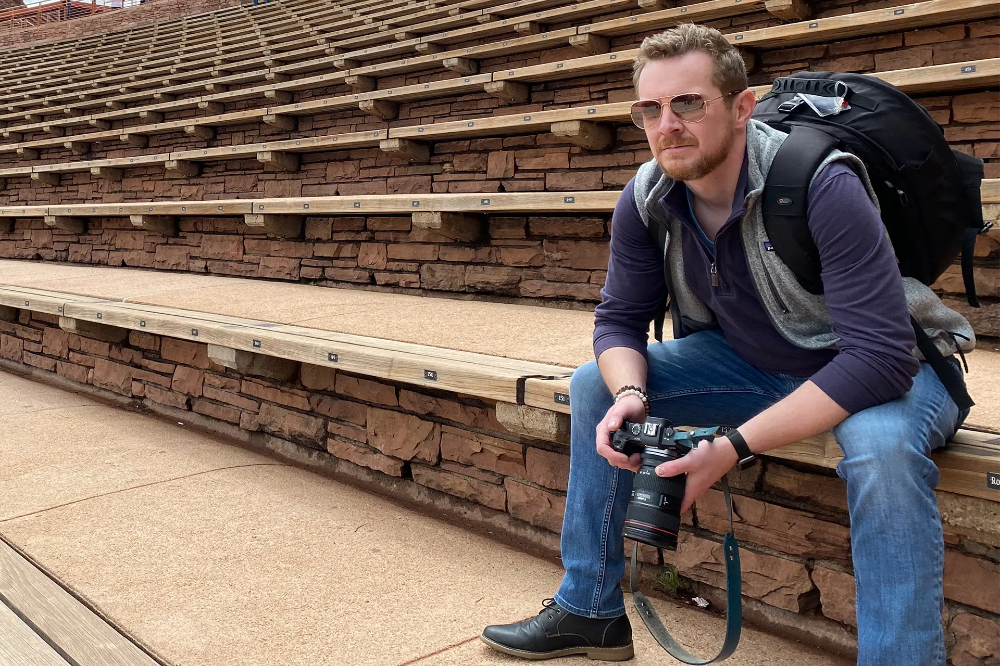

I help change makers tell the stories only they can tell.
The ones that make people stop scrolling and actually care. I work with nonprofits, faith communities, and mission-driven teams who have something worth saying — and need help saying it well.
A couple of things I've built
Not an exhaustive list — just two projects that show the range of what "creative strategy" actually means in practice.
Rebuilding episcopalchurch.org
I led the ground-up redesign of The Episcopal Church's flagship website — a multi-year, half-million-dollar effort serving over a million members, clergy, and seekers. My job was less "build a website" and more "get dozens of stakeholders, three languages, and a decade of content to agree on a plan" — content strategy, governance, accessibility, IT, and a new WordPress platform, all at once.
Read the full story →The Concert for the Human Family
A touring concert experience I created that blends jazz, hip-hop, and bluegrass with stories of reconciliation and healing — because sometimes the fastest way into a hard conversation is through a song, not a statement. Performed live at Philadelphia's Episcopal Cathedral, with music I wrote and own outright.
Watch & read more →A few ways to bring me in
Whether you need one great hour on a stage or a longer partnership behind the scenes.
Speaking
Keynotes and workshops on creative strategy, digital transformation, and leading creative work through institutional complexity. Built for conferences, boards, and staff retreats.
Consulting
Hands-on help with a specific project — a site rebuild, a rebrand, a campaign, a story you know needs telling but don't know how to start.
Retainer
Ongoing strategic partnership for organizations who want ongoing creative thinking in the room, not just a one-off project.
Got a story that's not being told well yet?
Tell me about it. No pitch decks required.
Get in touch →